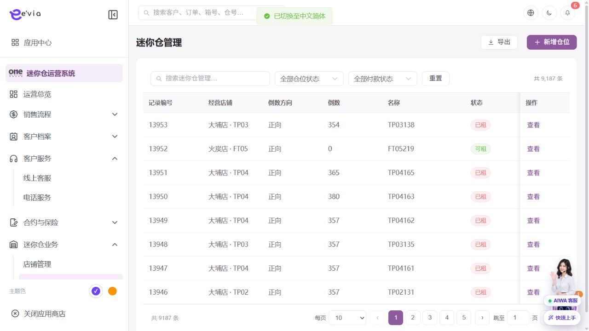

数据迁移 PRD
下载 Word 文档数据迁移 PRD
运营后台研发详细需求规格 · V2.2 · 2026-09-09
1 文档目标与范围
将OSS及历史数据按可验证、可回滚的批次迁移到新领域模型。 本文档明确页面字段、操作流程、业务规则、跨端契约、权限和验收条件。
| 属性 | 内容 |
|---|---|
| 文档编号 | OS-OPS-PRD-34 |
| 产品基线 | AiwaBot产品原型 V3.2 与 OneStorage运营后台原型 V1.1 |
| 版本 | V2.2 2026-09-09 |
1.1 原型界面依据
本模块界面直接取自 AiwaBot产品原型-v3.2.html。真实截图及功能点对应说明见“界面与功能对应说明”。
2 界面与页面结构
2.1 界面与功能对应说明
以下真实原型截图用于确定页面区域、入口和交互位置；字段校验、状态变化和服务端处理以本PRD功能规格为准。

| 说明项 | 界面辅助说明 |
|---|---|
| 对应功能点 | OS-OPS-PRD-34-FP01 配置批次；OS-OPS-PRD-34-FP02 试运行；OS-OPS-PRD-34-FP03 执行；OS-OPS-PRD-34-FP04 对账；OS-OPS-PRD-34-FP05 回滚 |
| 页面区域 | 界面同时呈现资产或履约对象、当前状态、位置/归属信息、筛选条件和业务操作入口。 |
| 交互要求 | 选择门店、区域或状态后刷新对象范围；状态动作先校验占用关系和版本，成功后刷新资产状态及关联订单/工单。 |
| 状态与权限 | 动作由allowedActions控制；无权限隐藏入口，接口仍执行403校验并记录审计。 |
2.3 筛选条件
| 筛选项 | 规则 |
|---|---|
| 批次或实体 | 支持组合查询、重置和返回保留。 |
| 来源系统 | 支持组合查询、重置和返回保留。 |
| 状态 | 支持组合查询、重置和返回保留。 |
| 负责人 | 支持组合查询、重置和返回保留。 |
| 执行时间 | 支持组合查询、重置和返回保留。 |
3 列表字段规格
>| 字段ID | 字段 | 来源 | 展示与交互规则 |
|---|---|---|---|
| OS-OPS-PRD-34-L01 | 迁移批次 | 业务主域 | 详情与导出保持一致；空值显示—，不使用模拟值补齐。 |
| OS-OPS-PRD-34-L02 | 实体 | 业务主域 | 详情与导出保持一致；空值显示—，不使用模拟值补齐。 |
| OS-OPS-PRD-34-L03 | 源表 | 业务主域 | 详情与导出保持一致；空值显示—，不使用模拟值补齐。 |
| OS-OPS-PRD-34-L04 | 目标对象 | 业务主域 | 详情与导出保持一致；空值显示—，不使用模拟值补齐。 |
| OS-OPS-PRD-34-L05 | 总数 | 业务主域 | 详情与导出保持一致；空值显示—，不使用模拟值补齐。 |
| OS-OPS-PRD-34-L06 | 成功数 | 业务主域 | 详情与导出保持一致；空值显示—，不使用模拟值补齐。 |
| OS-OPS-PRD-34-L07 | 失败数 | 业务主域 | 详情与导出保持一致；空值显示—，不使用模拟值补齐。 |
| OS-OPS-PRD-34-L08 | 跳过数 | 业务主域 | 详情与导出保持一致；空值显示—，不使用模拟值补齐。 |
| OS-OPS-PRD-34-L09 | 校验结果 | 服务端枚举 | 以标签显示；筛选、导出和详情使用同一枚举文案。 |
| OS-OPS-PRD-34-L10 | 负责人 | 服务端/关联主数据 | 显示姓名，离职或停用账号保留历史名称。 |
| OS-OPS-PRD-34-L11 | 开始时间 | 服务端时间 | 按Asia/Hong_Kong显示；空值显示—，排序使用原始时间。 |
| OS-OPS-PRD-34-L12 | 结束时间 | 服务端时间 | 按Asia/Hong_Kong显示；空值显示—，排序使用原始时间。 |
| OS-OPS-PRD-34-L13 | 状态 | 服务端/关联主数据 | 以标签显示服务端枚举；不可由前端自行推导。 |
| OS-OPS-PRD-34-L14 | 操作 | 服务端/关联主数据 | 根据allowedActions显示查看、编辑及状态动作；后端再次鉴权。 |
4 新增与编辑表单
| 字段ID | 字段 | 控件 | 必填 | 校验与保存规则 |
|---|---|---|---|---|
| OS-OPS-PRD-34-F01 | 批次名称 | 文本框 | 条件必填 | 去除首尾空格；保存原始值与标准化值。 |
| OS-OPS-PRD-34-F02 | 来源系统 | 文本框 | 条件必填 | 去除首尾空格；保存原始值与标准化值。 |
| OS-OPS-PRD-34-F03 | 数据实体 | 文本框 | 条件必填 | 去除首尾空格；保存原始值与标准化值。 |
| OS-OPS-PRD-34-F04 | 源查询范围 | 单选或下拉选择 | 必填 | 选项来自服务端字典；提交编码值，界面显示名称。 |
| OS-OPS-PRD-34-F05 | 目标版本 | 文本框 | 条件必填 | 去除首尾空格；保存原始值与标准化值。 |
| OS-OPS-PRD-34-F06 | 字段映射版本 | 文本框 | 条件必填 | 去除首尾空格；保存原始值与标准化值。 |
| OS-OPS-PRD-34-F07 | 去重规则 | 文本框 | 条件必填 | 去除首尾空格；保存原始值与标准化值。 |
| OS-OPS-PRD-34-F08 | 校验规则 | 文本框 | 条件必填 | 去除首尾空格；保存原始值与标准化值。 |
| OS-OPS-PRD-34-F09 | 试运行 | 文本框 | 条件必填 | 去除首尾空格；保存原始值与标准化值。 |
| OS-OPS-PRD-34-F10 | 计划时间 | 单选或下拉选择 | 必填 | 选项来自服务端字典；提交编码值，界面显示名称。 |
| OS-OPS-PRD-34-F11 | 负责人 | 单选或下拉选择 | 必填 | 选项来自服务端字典；提交编码值，界面显示名称。 |
| OS-OPS-PRD-34-F12 | 回滚方案 | 文本框 | 条件必填 | 去除首尾空格；保存原始值与标准化值。 |
5 功能点详细设计
| 功能编号 | 功能点 | 目标 |
|---|---|---|
| OS-OPS-PRD-34-FP01 | 配置批次 | 选择实体、范围、映射和校验规则。 |
| OS-OPS-PRD-34-FP02 | 试运行 | 只生成差异和错误报告，不写正式数据。 |
| OS-OPS-PRD-34-FP03 | 执行 | 按批次和检查点写入并记录源主键。 |
| OS-OPS-PRD-34-FP04 | 对账 | 校验数量、金额、状态和关联完整性。 |
| OS-OPS-PRD-34-FP05 | 回滚 | 按批次撤销可逆写入并保留审计。 |
5.1 配置批次
功能编号：OS-OPS-PRD-34-FP01
功能目的：选择实体、范围、映射和校验规则。
使用角色与入口：运营管理员或该配置项负责人；从列表右上角管理入口或详情页编辑入口进入。入口显示前校验菜单、动作和数据范围。
前置条件：用户登录有效；目标对象存在且属于用户dataScope；当前状态包含该动作；页面持有最新version和allowedActions。涉及金额、库存、附件或第三方结果时必须回源确认。
界面操作：打开编辑界面并显示当前version，维护批次名称、来源系统、数据实体、源查询范围、目标版本、字段映射版本、去重规则、校验规则、试运行、计划时间、负责人、回滚方案；受引用字段变更时展示影响对象，保存前确认生效范围。
系统处理：服务端以expectedVersion执行并发控制，校验引用关系和生效时间；保存新版本并记录变更前后值。选择实体、范围、映射和校验规则。
业务规则：每条目标记录保存来源系统、源主键和批次。服务端必须重复校验。
成功结果：页面提示“配置批次成功”，刷新对象状态、version、allowedActions、关联对象和时间线；如产生异步任务，同时显示任务编号和进度入口。
异常与恢复：400保留输入；403拒绝并审计；409要求刷新；超时按clientRequestId查询；部分成功显示明细和补偿入口。
跨端影响：迁移期间小程序读取切换按实体灰度；接收端打开后重新鉴权并回源。
验收条件：在允许状态下完成配置批次时仅产生一次预期数据变化和一次审计记录；越权、错误状态、重复提交及版本冲突均不得产生重复对象或越级状态。
5.2 试运行
功能编号：OS-OPS-PRD-34-FP02
功能目的：只生成差异和错误报告，不写正式数据。
使用角色与入口：当前对象负责人、被分派执行人或获授权管理员；从列表行操作、详情页主操作区或待办入口进入。入口显示前校验菜单、动作和数据范围。
前置条件：用户登录有效；目标对象存在且属于用户dataScope；当前状态包含该动作；页面持有最新version和allowedActions。涉及金额、库存、附件或第三方结果时必须回源确认。
界面操作：在详情页执行试运行，填写或核对计划时间、负责人、开始时间、结束时间、状态；界面随步骤显示当前节点、下一步和可撤回条件。
系统处理：服务端调用POST /ops/v1/data-migrations/{id}/actions/{action}，校验权限、当前状态、expectedVersion和业务不变量，在事务中写入状态及时间线。只生成差异和错误报告，不写正式数据。
业务规则：每条目标记录保存来源系统、源主键和批次；字段映射版本不可在执行中修改。服务端必须重复校验。
成功结果：页面提示“试运行成功”，刷新对象状态、version、allowedActions、关联对象和时间线；如产生异步任务，同时显示任务编号和进度入口。
异常与恢复：400保留输入；403拒绝并审计；409要求刷新；超时按clientRequestId查询；部分成功显示明细和补偿入口。
跨端影响：双写阶段以主系统为准并记录差异；接收端打开后重新鉴权并回源。
验收条件：在允许状态下完成试运行时仅产生一次预期数据变化和一次审计记录；越权、错误状态、重复提交及版本冲突均不得产生重复对象或越级状态。
5.3 执行
功能编号：OS-OPS-PRD-34-FP03
功能目的：按批次和检查点写入并记录源主键。
使用角色与入口：当前对象负责人、被分派执行人或获授权管理员；从列表行操作、详情页主操作区或待办入口进入。入口显示前校验菜单、动作和数据范围。
前置条件：用户登录有效；目标对象存在且属于用户dataScope；当前状态包含该动作；页面持有最新version和allowedActions。涉及金额、库存、附件或第三方结果时必须回源确认。
界面操作：在详情页执行执行，填写或核对计划时间、负责人、开始时间、结束时间、状态；界面随步骤显示当前节点、下一步和可撤回条件。
系统处理：服务端调用POST /ops/v1/data-migrations/{id}/actions/{action}，校验权限、当前状态、expectedVersion和业务不变量，在事务中写入状态及时间线。按批次和检查点写入并记录源主键。
业务规则：字段映射版本不可在执行中修改；正式执行前需备份和审批。服务端必须重复校验。
成功结果：页面提示“执行成功”，刷新对象状态、version、allowedActions、关联对象和时间线；如产生异步任务，同时显示任务编号和进度入口。
异常与恢复：400保留输入；403拒绝并审计；409要求刷新；超时按clientRequestId查询；部分成功显示明细和补偿入口。
跨端影响：迁移完成后跨端编号映射持续可查询；接收端打开后重新鉴权并回源。
验收条件：在允许状态下完成执行时仅产生一次预期数据变化和一次审计记录；越权、错误状态、重复提交及版本冲突均不得产生重复对象或越级状态。
5.4 对账
功能编号：OS-OPS-PRD-34-FP04
功能目的：校验数量、金额、状态和关联完整性。
使用角色与入口：当前对象负责人、被分派执行人或获授权管理员；从列表行操作、详情页主操作区或待办入口进入。入口显示前校验菜单、动作和数据范围。
前置条件：用户登录有效；目标对象存在且属于用户dataScope；当前状态包含该动作；页面持有最新version和allowedActions。涉及金额、库存、附件或第三方结果时必须回源确认。
界面操作：在详情页执行对账，填写或核对计划时间、负责人、开始时间、结束时间、状态；界面随步骤显示当前节点、下一步和可撤回条件。
系统处理：服务端调用POST /ops/v1/data-migrations/{id}/actions/{action}，校验权限、当前状态、expectedVersion和业务不变量，在事务中写入状态及时间线。校验数量、金额、状态和关联完整性。
业务规则：金额和状态必须专项对账。服务端必须重复校验。
成功结果：页面提示“对账成功”，刷新对象状态、version、allowedActions、关联对象和时间线；如产生异步任务，同时显示任务编号和进度入口。
异常与恢复：400保留输入；403拒绝并审计；409要求刷新；超时按clientRequestId查询；部分成功显示明细和补偿入口。
跨端影响：迁移期间小程序读取切换按实体灰度；接收端打开后重新鉴权并回源。
验收条件：在允许状态下完成对账时仅产生一次预期数据变化和一次审计记录；越权、错误状态、重复提交及版本冲突均不得产生重复对象或越级状态。
5.5 回滚
功能编号：OS-OPS-PRD-34-FP05
功能目的：按批次撤销可逆写入并保留审计。
使用角色与入口：对象负责人或具备状态管理权限的管理员；从列表行操作或详情页状态动作区进入。入口显示前校验菜单、动作和数据范围。
前置条件：用户登录有效；目标对象存在且属于用户dataScope；当前状态包含该动作；页面持有最新version和allowedActions。涉及金额、库存、附件或第三方结果时必须回源确认。
界面操作：在详情或行操作中触发回滚，界面展示当前状态、目标状态、影响范围和原因；高风险动作二次确认。
系统处理：服务端调用POST /ops/v1/data-migrations/{id}/actions/{action}，校验权限、当前状态、expectedVersion和业务不变量，在事务中写入状态及时间线。按批次撤销可逆写入并保留审计。
业务规则：每条目标记录保存来源系统、源主键和批次；字段映射版本不可在执行中修改。服务端必须重复校验。
成功结果：页面提示“回滚成功”，刷新对象状态、version、allowedActions、关联对象和时间线；如产生异步任务，同时显示任务编号和进度入口。
异常与恢复：400保留输入；403拒绝并审计；409要求刷新；超时按clientRequestId查询；部分成功显示明细和补偿入口。
跨端影响：双写阶段以主系统为准并记录差异；接收端打开后重新鉴权并回源。
验收条件：在允许状态下完成回滚时仅产生一次预期数据变化和一次审计记录；越权、错误状态、重复提交及版本冲突均不得产生重复对象或越级状态。
6 状态机与业务规则
| 对象 | 状态流转 |
|---|---|
| 数据迁移 | 草稿→待审批→试运行→待执行→执行中→校验中→成功/部分成功/失败→已回滚 |
| 异步任务 | 待执行→执行中→成功/失败→重试/人工处理 |
| 规则ID | 业务规则 |
|---|---|
| OS-OPS-PRD-34-R01 | 每条目标记录保存来源系统、源主键和批次 |
| OS-OPS-PRD-34-R02 | 字段映射版本不可在执行中修改 |
| OS-OPS-PRD-34-R03 | 错误记录可修复后增量重跑 |
| OS-OPS-PRD-34-R04 | 金额和状态必须专项对账 |
| OS-OPS-PRD-34-R05 | 正式执行前需备份和审批 |
| OS-OPS-PRD-34-R06 | 所有写请求携带clientRequestId和expectedVersion，重复请求返回首次结果 |
| OS-OPS-PRD-34-R07 | 服务端返回allowedActions，前端仅据此展示按钮，后端仍逐动作鉴权 |
| OS-OPS-PRD-34-R08 | 列表、详情、关联选择器、统计和导出使用同一数据范围 |
| OS-OPS-PRD-34-R09 | 创建、编辑、状态流转、导出、下载和审批均记录操作审计 |
| OS-OPS-PRD-34-R10 | 第三方调用失败不得伪装主业务成功，进入可重试或人工处理状态 |
7 业务处理链路
配置和治理操作使用审批、发布和版本管理
下游状态变化通过领域事件处理
批量和异步任务提供状态与失败明细
8 跨端交互规则
| 规则ID | 交互规则 |
|---|---|
| OS-OPS-PRD-34-X01 | 迁移期间小程序读取切换按实体灰度 |
| OS-OPS-PRD-34-X02 | 双写阶段以主系统为准并记录差异 |
| OS-OPS-PRD-34-X03 | 迁移完成后跨端编号映射持续可查询 |
客户小程序仅访问本人数据，工单小程序仅访问本人或团队任务
深链打开后重新校验身份、权限和最新状态
金额、库存、状态和allowedActions必须回源
离线重试沿用同一clientRequestId
9 接口与事件契约
| 契约 | 路径或事件 | 要求 |
|---|---|---|
| 列表 | GET /ops/v1/data-migrations | 分页、排序、筛选、数据范围和脱敏 |
| 详情 | GET /ops/v1/data-migrations/{id} | version、关联对象、时间线和allowedActions |
| 新增 | POST /ops/v1/data-migrations | clientRequestId幂等 |
| 编辑 | PATCH /ops/v1/data-migrations/{id} | expectedVersion并发控制 |
| 动作 | POST /ops/v1/data-migrations/{id}/actions/{action} | 动作级权限和状态前置 |
| 事件 | 数据迁移.Changed.v1 | eventId、aggregateId、version和occurredAt |
10 异常与边界处理
| 场景 | 处理 |
|---|---|
| 400字段错误 | 字段级提示并保留输入 |
| 403无权限 | 拒绝并记录审计 |
| 404不存在 | 不泄露额外对象信息 |
| 409版本冲突 | 刷新后重新操作 |
| 重复请求 | 返回首次幂等结果 |
| 第三方失败 | 进入重试或人工处理 |
11 验收标准
| 验收ID | 验收条件 |
|---|---|
| OS-OPS-PRD-34-AC01 | 列表字段、筛选、分页、排序和导出一致 |
| OS-OPS-PRD-34-AC02 | 表单字段、必填和跨字段校验完整 |
| OS-OPS-PRD-34-AC03 | 所有动作同时校验权限、数据范围和状态 |
| OS-OPS-PRD-34-AC04 | 重复请求无重复记录或副作用 |
| OS-OPS-PRD-34-AC05 | 跨端编号、状态、金额和时间一致 |
| OS-OPS-PRD-34-AC06 | 异常和空数据有明确反馈 |
| OS-OPS-PRD-34-AC07 | 敏感字段按权限脱敏并审计 |
| OS-OPS-PRD-34-AC08 | P0规则具有自动化测试 |